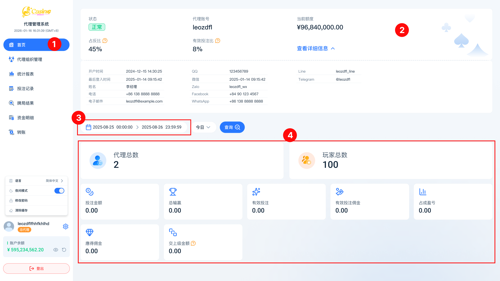

05
如何查看收益
了解如何在代理后台查看您的占成收益与下级投注数据
方法一：首页仪表板概览
您可以在首页仪表板快速查阅当下的经营数据，图示说明如下：
- 侧边栏「首页」(标示 1)：点击即可进入概览页面。
- 查看详细信息 (标示 2)：点击可展开个人帐号详细资讯，包含：占成比、有效投注比、开户时间等。
- 选择查询时间 (标示 3)：利用日期选择器（今日、昨日、本周等）快速筛选数据统计范围。
- 数据仪表板 (标示 4)：概览当下各层级的代理/会员总数、投注总额、总输赢、应得佣金等关键数据。

收益数据说明
| 字段 | 说明 |
|---|---|
| 有效投注额 | 下级所有有效投注的总金额（扣除对冲等无效注） |
| 输赢金额 | 下级在该周期内的总输赢金额 |
| 占成收益 | 按您的占成比例计算所得的收益金额 |
| 结算状态 | 显示该周期是否已完成结算 |
收益每日自动结算一次，结算时间通常为凌晨 00:00–02:00。结算完成后数据不可更改。